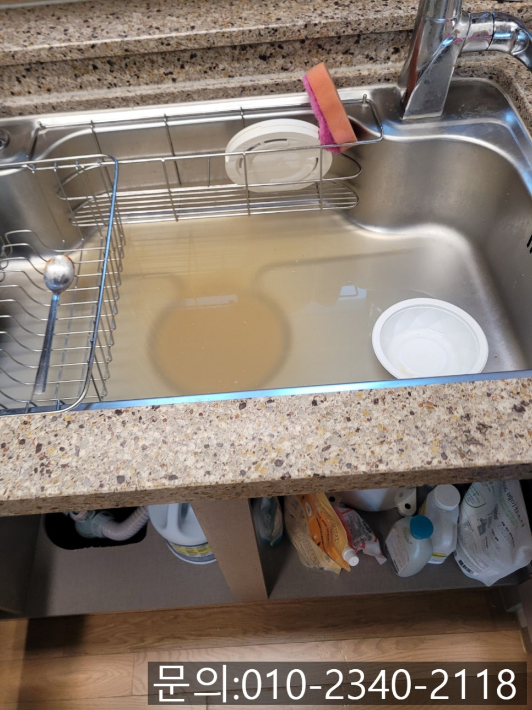
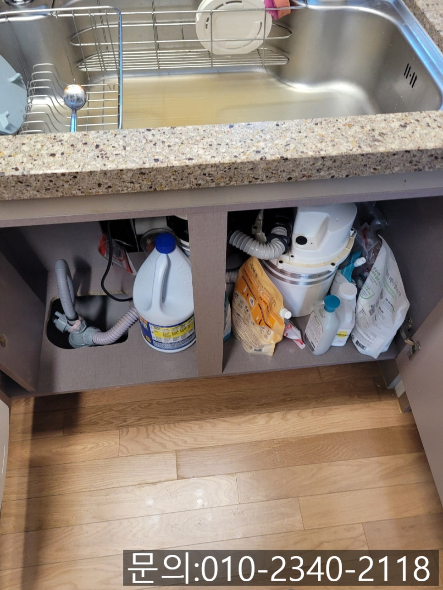
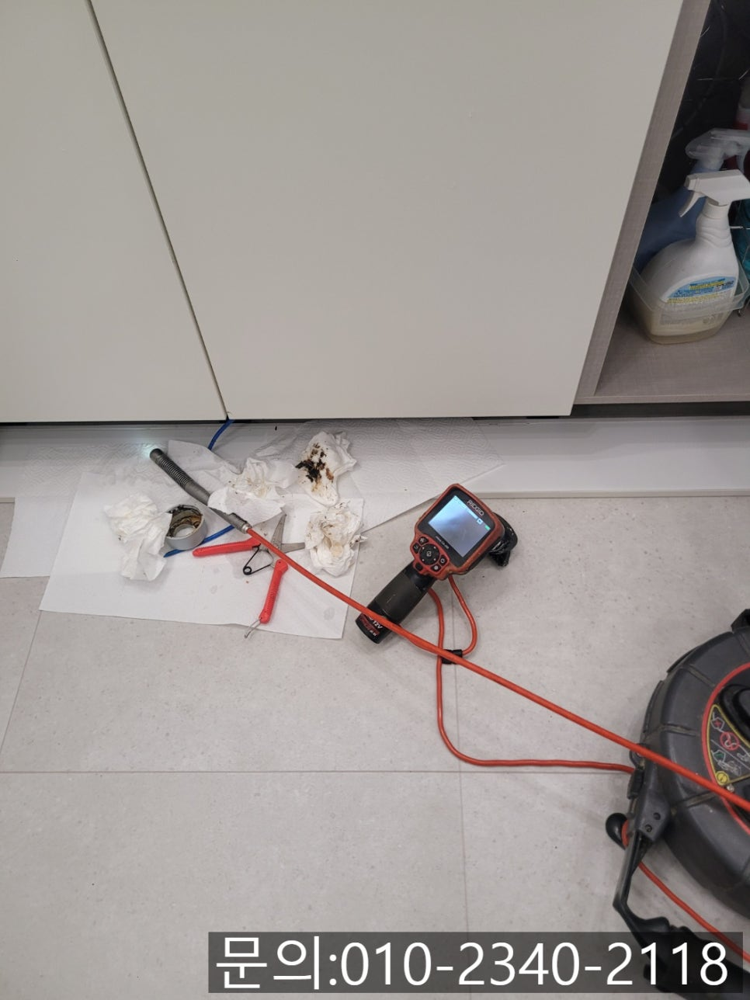
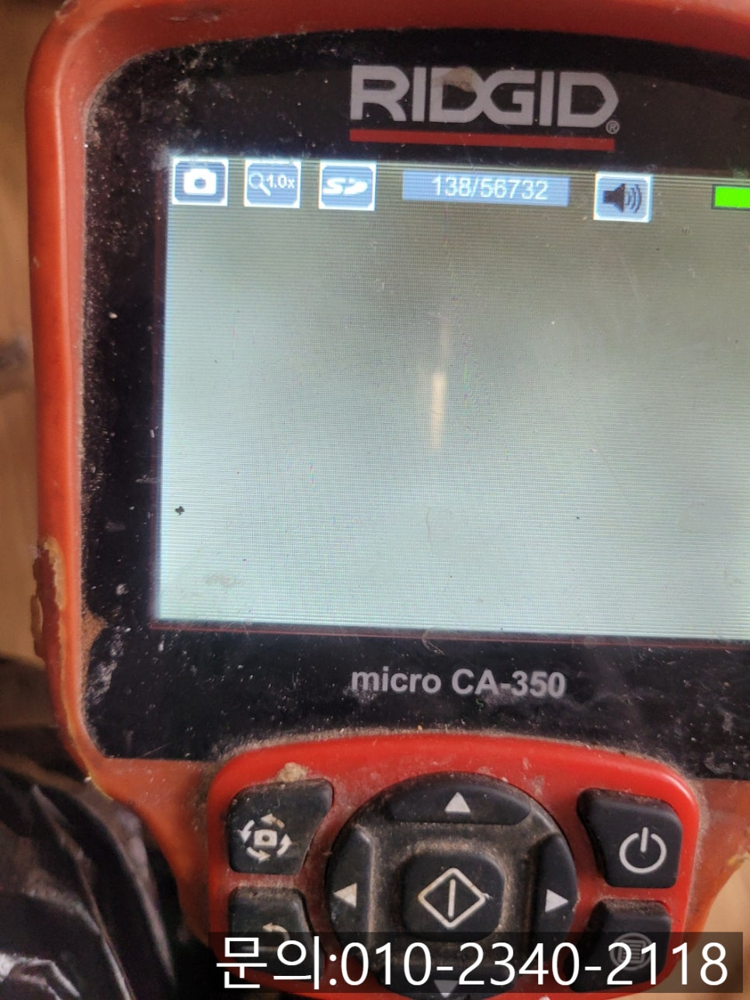
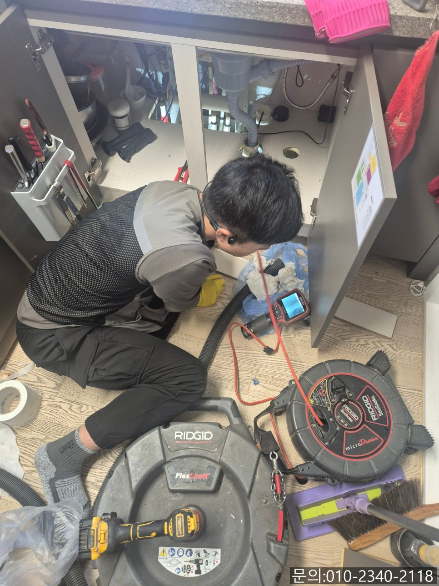
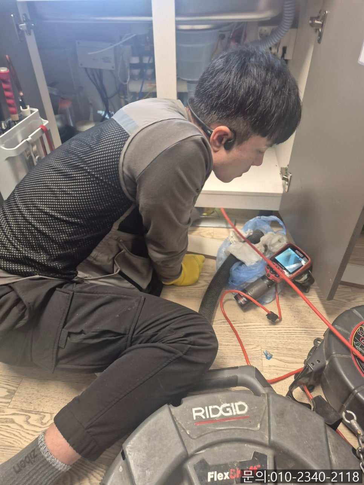

🏠 초월읍 싱크대 막힘 광주 곤지암읍 빌라 하수구 역류 뚫는 설비업체
광주 싱크대막힘 전문 시공 후기

📋 작업 개요
- 위치: 광주
- 서비스 유형: 싱크대막힘, 하수구막힘, 배관막힘, 역류해결, 뚫는업체, 배관청소
- 작업 일시: 2025. 4. 10. 19:49
- 업체명: 하수구수사대 (010-5615-2118)
🔍 문제 상황
안녕하세요.
초월읍 싱크대 막힘, 광주 곤지암읍 빌라 하수구 역류 뚫는 설비 업체 하수구 다큐입니다.
초월읍 싱크대 막힘을 문의하는 전화를 받았습니다.
초월읍 싱크대 막힘 고객님의 경우 혼자서 뚫어보기 해 인터넷으로 방법을 검색해 가장 쉬워 보이는 방법을 이용해 보셨다고 해요.
광주 곤지암읍 빌라 하수구 역류 뚫는 설비 업체 하수구 다큐는 고객님께 어떤 방법을 이용해 보셨냐고 여쭤보니 화장실 청소할 때 사용하는 락스를 배수구로 부으면 청소도 되고 배관도 뚫린다는 것을 보고 락스를 잔뜩 부었다고 하셨습니다.
그래서 락스를 이용하고 효과를 보셨냐고 여쭤보니, 락스를 사용해도 달라지는 것도 없고 주방에 락스 냄새만 진동해서 머리가 아프다고 하셨어요.

🔎 원인 분석
💡 전문가 진단: 정밀 진단 장비를 사용하여 슬러지의 고착 여부를 판명하고 타격/세척 작업을 실시했습니다.
그래서 우선 고객님께 주소를 받아 신속하게 방문해 드렸습니다.
신속하게 현장에 도착해 보니 싱크대에서 사용했던 물이 거꾸로 역류한 상태로 정체되어 있었습니다.
역류한 물이 흘러가지 못하다 보니 싱크대를 전혀 사용할 수 없는 상태로 많이 불편해 보였습니다.
광주 곤지암읍 빌라 하수구 역류가 발생하는 원인은 주로 배수구 내부에 쌓인 기름 슬러지와 음식물 찌꺼기 때문인데요.
우리가 잘 알고 있는 배수구 클리너나 베이킹소다와 식초를 사용하는 배관 청소 방법의 경우 배관에 이물질이 쌓이는 것을 최소화시킬 수는 있지만 이미 기름 슬러지로 인해 막힌 상태에서는 락스나 배수구 클리너를 이용해도 근본적이 원인이 제거되지 않아 뚫리지 않습니다.
우선 광주 곤지암읍 빌라 하수구 역류의 근본적인 원인을 찾아보기로 했어요.

🔧 작업 과정
내시경 카메라를 이용해 배관 내부를 막고 있는 원인을 확인해야 하수구 역류 뚫는 방법이나 발생되는 정확한 비용 등에 대해 고객님께 설명해 드릴 수 있습니다.
싱크대에 고여있는 물을 석션으로 제거해 주고, 주름 배관을 분리해 준 다음 내시경 카메라를 진입시켰는데요.
기름 슬러지와 각종 이물질로 꽉 막힌 상태이다 보니 아무것도 보이지 않는 상태였습니다.
고객님께 내시경 카메라로 점검한 배관 내부 상태에 대해 안내해 드리고 플렉스 샤프트라는 전문 장비를 이용해 작업을 진행하기로 했습니다.
고객님은 얇은 노즐로 되어있는 플렉스 샤프트가 배관 내부에서 기름 슬러지를 모두 제거할 수 있는지 걱정하셨는데요.
이미 배관에 쌓여있는 기름 슬러지의 경우 오랜 시간 딱딱하게 굳어있다 보니 플렉스 샤프트 같은 전문 장비가 없다면 제거하기 쉽지 않습니다.
플렉스 샤프트 장비는 배수구 내부에 진입시켜 본체에 연결되어 있는 드릴을 작동시키면 노즐 끝에 달린 체인이 회전하면서 기름 슬러지를 스케일링해 주는 역할을 하는 전문 장비이기 때문에 깨끗하게 청소할 수 있어요.
몇 차례 플렉스 샤프트로 작업을 진행하자 많은 양의 기름 슬러지가 잘게 갈려 흘러내려 가고 조금씩 배관의 모습을 드러내기 시작합니다.
하지만 내시경 카메라로 확인했을 때 배관 곳곳에 작은 이물질들이 남아있는 상태로 배관 전체를 훑어보면서 잔여 이물질을 제거하기 시작했어요.
꼼꼼하게 배관을 살펴 가며 잔여 이물질도 플렉스 샤프트 장비를 이용해 완벽하게 제거해 드렸습니다.


✅ 작업 완료
하수구 막힘이 발생했을 때는 어떤 설비업체에 의뢰하느냐에 따라 결과가 달라질 수밖에 없습니다.
전문 지식과 장비를 이용해 문제의 원인을 찾아 해결해 드리는 설비업체 하수구 다큐와 함께 해결해 보세요!
경기도 용인시 수지구 풍덕천로129번길 9 5층 590호




⚠️ 주방 싱크대 배관 막힘 예방 수칙
- ✅ 기름기가 묻은 식기나 프라이팬은 설거지 전 키친타올로 반드시 기름때를 닦아내세요.
- ✅ 주기적으로 싱크대 개수대에 뜨거운 물을 가득 받아 한 번에 내려 배관 내부 기름을 씻어내세요.
- ✅ 배수구 거름망을 미세한 필터로 사용하시고 음식물 찌꺼기가 틈으로 새어 들지 않게 관리하세요.
- ✅ 베이킹소다와 식초를 뜨거운 물과 함께 일주일에 한 번씩 부어주면 배관 살균과 막힘 예방에 좋습니다.
💡 핵심 정리
- 확실한 장비 작업(내시경 점검 및 샤프트 스케일링)으로 원인을 뿌리 뽑습니다.
- 작업 후 1년 이내에 동일한 부위 재발 시 100% 무상 A/S 서비스를 보장합니다.
- 서울 · 경기 · 인천 전 지역에 24시간 언제든 긴급 출동할 수 있도록 항시 대기 중입니다.
❓ 자주 묻는 질문 (FAQ)
🚨 광주 싱크대막힘 문제로 고민이신가요?
정확한 원인 진단과 확실한 시공으로 재발 없는 해결을 약속드립니다.
24시간 긴급 출동 | 서울 · 경기 · 인천 전지역 | 1년 내 재발 시 무상 A/S